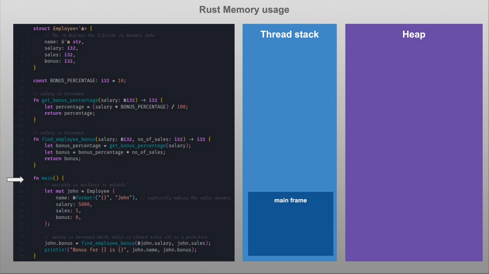
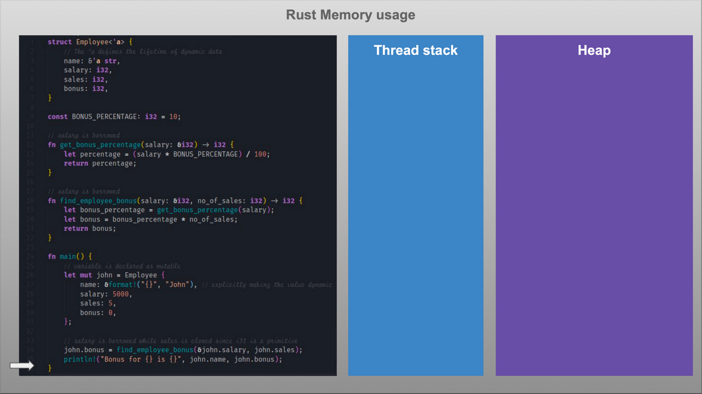

Rust Fundamentals
Agenda
- Basics of Rust
- Data types
- Functions
- Strings
- Memory Management
- Control Flow
- Ownership
- Traits
- Generic types
- Error Handling
- Concurrency
- Async and Await
Basics of Rust
Getting Started
- How to install rust.
- Rust tools.
- Rust Project Structure
Data Types
Variables and Mutability
Variables are immutable by default
fn main() {
let x = 5;
println!("The value of x is: {x}");
x = 6;
println!("The value of x is: {x}");
}
Variables and Mutability
Error message displayed
$ cargo run
Compiling variables v0.1.0 (file:///projects/variables)
error[E0384]: cannot assign twice to immutable variable `x`
--> src/main.rs:4:5
2 | let x = 5;
| -
| |
| first assignment to `x`
| help: consider making this binding mutable: `mut x`
3 | println!("The value of x is: {x}");
4 | x = 6;
| ^^^^^ cannot assign twice to immutable variable
For more information about this error, try `rustc --explain E0384`.
error: could not compile `variables` due to previous error
Mutability
How do we fix the error?
fn main() {
let mut x = 5;
println!("The value of x is: {x}");
x = 6;
println!("The value of x is: {x}");
}
Output
$ cargo run
Compiling variables v0.1.0 (file:///projects/variables)
Finished dev [unoptimized + debuginfo] target(s) in 0.30s
Running `target/debug/variables`
The value of x is: 5
The value of x is: 6
Constants
- Constants are values that are bound to a name and are not allowed to change
- mut is not used with constant
- You declare constants using the const keyword instead of the let keyword, and the type of the value must be annotated
Constants
- Constants can be declared in any scope, including the global scope
- Constants may be set only to a constant expression, not the result of a value that could only be computed at runtime
fn main() {
const THREE_HOURS_IN_SECONDS: u32 = 60 * 60 * 3;
}
Shadowing
- You can declare a new variable with the same name as a previous variable
- The first variable is shadowed by the second
fn main() {
let x = 5;
let x = x + 1;
{
let x = x * 2;
println!("The value of x in the inner scope is: {x}");
println!("The value of x is: {x}");
}
Data Types
- Data type subsets: scalar and compound
- Rust is a statically typed language, which means that it must know the types of all variables at compile time
Scalar Types
- Constants can be declared in any scope, including the global scope
- A scalar type represents a single value
- Integers
- Floating-point numbers
- Booleans
- Characters
Integer Types
integer is a number without a fractional component
| Number literals | Example |
|---|---|
| Decimal | 98_222 |
| Hex | 0xff |
| Octal | 0o77 |
| Binary | 0b1111_0000 |
| Byte (u8 only) | b'A' |
Floating-Point Types
- Numbers with decimal points
- Rust’s floating-point types are f32 and f64
fn main() {
let x = 2.0; // f64
let y: f32 = 3.0; // f32
}
Numeric Operations
fn main() {
// addition
let sum = 5 + 10;
// subtraction
let difference = 95.5 - 4.3;
// multiplication
let product = 4 * 30;
// division
let quotient = 56.7 / 32.2;
let truncated = -5 / 3; // Results in -1
// remainder
let remainder = 43 % 5;
}
The Boolean Type
- Rust has two possible values: true and false
- Booleans are one byte in size
- It is specified using bool
fn main() {
let t = true;
let f: bool = false; // with explicit type annotation
}
The Character Type
- Rust’s char type is the language’s most primitive alphabetic type
- Specify char literals with single quotes
- Rust’s char type is four bytes in size and represents a Unicode Scalar Value, which means it can represent a lot more than just ASCII
fn main() {
let c = 'z';
let z: char = 'ℤ'; // with explicit type annotation
let heart_eyed_cat = 'üòª'; //emoji
}
Compound Types
- Compound types can group multiple values into one type
- Rust has two primitive compound types: tuples and arrays
Compound Types
Exercise-1
(clue: all the array elements should be of same type)
fn main() {
let x = 2.0; // f64
let y: f32 = 3.0; // f32
}
Run in online editor
Compound Types
Exercise-2
(clue: indexing should start from 0)
fn main() {
let arr = ['a', 'b', 'c'];
let ele = arr[1]; // Only modify this line to make the code work!
assert!(ele == 'a');
println!("Success!");
}
Run in online editor
The Tuple Type
- A tuple is a general way of grouping together a number of values with a variety of types into one compound type
- Fixed length
- Known at Compile time
- Homogeneous
fn main() {
// creating tuple
let tup: (i32, f64, u8) = (500, 6.4, 1);
let gfg: (&str, &str, &str) = ("Apple", "For", "Bananas");
// accessing tuple data using positional argument
println!("{} {} {}", gfg.0, gfg.1, gfg.2);
// creating another tuple
let article = ("abc", "xyz", 14,12,2020);
let (a,b,c,d,e) = article;
// accessing tuple using variables
println!("This written by {} at {} on {}/{}/{}", b,a,c,d,e);
}
Destructuring Tuple
fn main() {
let tup = (500, 6.4, 1);
let (x, y, z) = tup;
println!("The value of y is: {y}");
}
The Array Type
- Collection of multiple values is with an array
- Every element of an array must have the same type
- Arrays in Rust have a fixed length
fn main() {
let a = [1, 2, 3, 4, 5];
}
Accessing Array Elements
fn main() {
let a = [1, 2, 3, 4, 5];
let first = a[0];
let second = a[1];
}
Structure
- Structs hold multiple related values
- In a struct you’ll name each piece of data so it’s clear what the values mean
- Order of the data to specify or access the values of an instance need not be same
Defining a Struct
- We enter the keyword 'struct' and name the entire struct
- Inside curly brackets, we define the names and types of the pieces of data, which we call 'fields'
struct User {
active: bool,
username: String,
email: String,
sign_in_count: u64,
}
fn main() {}
Instantiating a Struct
Create instance by stating the name of the struct and then add curly brackets containing key: value pairs
- keys are the names of the fields
- values are the data we want to store in those fields
fn main() {
let user1 = User {
active: true,
username: String::from("someusername123"),
email: String::from("someone@example.com"),
sign_in_count: 1,
};
}
Enums
The enum keyword allows the creation of a type which may be one of a few different variants. Any variant which is valid as a struct is also valid as an enum
enum Work {
Civilian,
Soldier,
}
fn main() {
use crate::Work::{Civilian, Soldier};
// Equivalent to `Work::Civilian`.
let work = Civilian;
match work {
// Note the lack of scoping because of the explicit `use` above
Civilian => println!("Civilians work!"),
Soldier => println!("Soldiers fight!"),
}
}
Run in online editor
Functions
What we are covering
- Define a function in rust
- Call a function in rust
- Function parameters
- Function with return value
- Memory management
- Generic parameters
- Associated functions
- Method that access data
- Generic types
- Closures
Define a Function in Rust
Function is a reusable block of code, in Rust "fn" keyword is used to define a function.
Structure:
//define a function
fn function_name(arguments) -> return_val {
// code
}
Example:
// greet function
fn greet() {
println!("Hello world!");
}
// main function
fn main() {
}
Calling a Function in Rust
Function name followed by parentheses "()" is used to call a function
fn greet() { <---------
|
println!("Hello world!"); | Execution flow is
} | tranferred to
| called function
fn main() { |
greet(); -------------------^
}
Function Parameters
fn multiply(num1: f64, num2: i64) {
let result = num1 * num2 as f64;
println!("Result: {}", result);
}
In this example function multiply accepts two parameters 'num1' and 'num2'
num1 has type f64, i.e float 64 num2 has type i64, i.e integer 64Function with Return Value
- `-> type` syntax is used to specify the return type
- possible to return a without explicitly using the `return` keyword
- the last expression is returned as the result of function
fn return_nothing() {
// code
}
fn return_bool() -> bool {
//code
retun true;
}
fn multiply(float: f64, integer: i64) -> f64 {
let result = float * integer as f64;
result
}
Generic Parameters
fn min(a: T, b: T) -> T {
if a < b {
a
} else {
b
}
}
fn main(){
let x = min(5, 10); // integer
let y = min(5.0, 10.0); // float
let z = min("hello", "world"); // string
}
generic parameters allow a function, struct, or enum to work with multiple types, instead of just one specific type. You can specify generic parameters in a function signature by enclosing them in angle brackets (< >) after the function name.
Associated Functions
- function that belongs to a struct or enum, rather than an instance of that struct or enum
- Associated functions are called using the name of the struct or enum, followed by the double colon (::) operator
Example of an associated function `new` that acts as a constructor
struct Point {
x: i32,
y: i32,
}
impl Point {
fn new(x: i32, y: i32) -> Point {
Point { x, y }
}
}
fn main(){
let p = Point::new(1, 2);
}
Methods that access data
- `new`: a constructor that creates a new instance of the Rectangle struct.
- `area`: a method that calculates the area of the Rectangle and uses `&self` to access the data
struct Rectangle {
width: i32,
height: i32,
}
impl Rectangle {
fn new(width: i32, height: i32) -> Rectangle {
Rectangle { width, height }
}
fn area(&self) -> i32 {
self.width * self.height
}
}
Closures
a closure is an anonymous function that can capture values from the environment and defined using the `| |` characters.
fn call_function< F: Fn(i32) -> i32>(f: F, x: i32) -> i32 {
f(x)
}
fn return_function() -> Box < dyn Fn(i32) -> i32> {
Box::new(|x: i32| -> i32 { x * x })
}
fn main(){
// Closure
let square = |x: i32| -> i32 { x * x };
// Closure can be passed as an argument to a function
println!("The square of 2 is {}", call_function(square, 2));
// Closure can be returned as a result from a function:
let square = return_function();
println!("The square of 2 is {}", square(2));
}
Strings
Strings
There are two types of strings in Rust
- String
- &str
String
- Implemented as a smart pointer, specifically a Vec
. - Heap allocated, growable
- Can be mutated
- Always be a valid UTF-8, not null terminated sequence.
&str
- An immutable reference to a valid UTF-8 sequence.
- May be anywhere, on the heap, stack, or in program memory.
- Only seen as a borrowed value.
- Has a fixed size, the value is known at compile time
Initialization
String
// creating a String using the String::new
let s = String::new();
//creating a String using the String::from function
let s = String::from("hello");
//converting a string slice &str to a String using the to_string method
let s = "hello".to_string();
Use `String` when you need to modify or own a string
&str
//creating an &str from a string literal
let s = "hello";
//creating an &str from a String:
let s = String::from("hello");
let str_slice = &s[0..2];
Use `&str` when you just want to borrow a reference to a string
Initialization

Operations on Strings
concatenation | appending | slicing | splitting | replacing | iterating | checking starts prefix | checkin ends suffix
let s1 = String::from("hello world");
let mut s2 = String::from("rust is awesome");
let s3 = s1 + &s2; // Concat using the `+` operator
let s4 = format!("{}{}",s1,s2);// Concat using the format! macro
s2.push_str(", & memory safe");// Appending using the push_str
let slice = &s[0..2]; // Slicing using string indices
for c in "hello".chars() { // Iterating over the string
println!("{}", c);
}
println!("Length:{}", s.len());// Finding the length of a string
if(s1.starts_with("he")){} // Check if starts with a prefix
if(s1.ends_with("ld")){} // Check if ends with a suffix
Memory management
Memory management
Rust program process is allocated some virtual memory by the Operating System(OS), this is the total memory that the process has access.

Heap Memory
- This is where all dynamic data(any data for which size cannot be calculated at compile time) is stored.
- This is the biggest block of memory and the part managed by Rust’s Ownership model.
- Box: The Box type is an abstraction for a heap-allocated value in Rust.
- Heap memory is allocated when Box::new is called. A Box < T > holds the smart-pointer to the heap memory allocated for type T and the reference is saved on the Stack.
Stack Memory
- This is the Stack memory area and there is one Stack per thread.
- This is where static values are allocated by default.
- Static data(data size known at compile time) includes function frames, primitive values, Structs and pointers to dynamic data in Heap
Memory Usage
All values in Rust are allocated on the Stack by default. There are two exceptions to this
- When size of the value is dynamic like String/Vectors
- When you manually create a Box < T > value which is allocated on heap
In both exception cases, the value will be allocated on Heap and its pointer will live on the Stack.


Smart Pointers
- A pointer is a general concept for a variable that contains an address in memory.
- Smart pointers implement the Deref and Drop traits.
- The Deref trait allows an instance of the smart pointer struct to behave like a reference so you can write your code to work with either references or smart pointers.
- The Drop trait allows you to customize the code that’s run when an instance of the smart pointer goes out of scope.
Smart pointers in the standard library
- Box< T > for allocating values on the heap
- Rc< T >, a reference counting type that enables multiple ownership
- Ref< T > and RefMut< T >, accessed through RefCell< T >, a type that enforces the borrowing rules at runtime instead of compile time
Box< T >
- Boxes allow you to store data on the heap rather than the stack. What remains on the stack is the pointer to the heap data.
- Box< T > allows immutable or mutable borrows checked at compile time
fn main() {
let b = Box::new(5);
println!("b = {}", b);
}
Rc< T >
- To enable multiple ownership explicitly by using the Rust type Rc
, which is an abbreviation for reference counting. - The Rc
type keeps track of the number of references to a value to determine whether or not the value is still in use - If there are zero references to a value, the value can be cleaned up without any references becoming invalid.
- Rc
allows only immutable borrows checked at compile time
// code here
RefCell< T >
- Rc< T >, the RefCell< T > type represents single ownership over the data it holds.
- At any given time, you can have either (but not both) one mutable reference or any number of immutable references.
- Rc< T > enables multiple owners of the same data; Box< T > and RefCell< T > have single owners.
- RefCell< T > allows immutable or mutable borrows checked at runtime.
// code here
Control Flow
if expression
- The most common way to introduce control flow and branch code.
- Provide a condition and then execute the block of code if the condition is met.
fn main() {
let price: i32 = 10;
if price > 0 {
println!(“true”);
}
}
if-else expression
- An else expression can be added optionally.
- If no else is provided the program will skip the if block if the condition is false.
fn main(){
let price: i32 = 10;
if price > 0 {
println!(“true”);
}
else {
println!(“false”);
}
}
else-if expression
- If you have more than two condition to check, if and else can be combined in else if expression.
- In the case all if and else if conditions evaluates to false, then the else block is executed.
fn main(){
let price: i32 = 10;
if price == 1 {
println!(“price is 1.”);
}
else if price = 2 {
println!(“price is 2.”);
}
else {
println!(“other price”);
}
}
match
- Rust provides pattern matching with the match keyword
- A scrutinee expression is provided to compare to the patterns.
- Arms are evaluated and compared with the scrutineer expression
fn main(){
let x = 1;
match x {
1 => println!(“one”),
2 => println!(“two”),
3 => println!(“three”),
4 => println!(“four”),
5 => println!(“five”),
_ => println!(“something else”),
}
}
match
- Here the scrutineer expression is x.
- Each arm has a pattern and some code. The “=>” operator separates the pattern and the code to run.
- The first arm with the matching pattern is chosen as the branch target of the match.
fn main(){
let x = 1;
match x {
1 => println!(“one”),
2 => println!(“two”),
3 => println!(“three”),
4 => println!(“four”),
5 => println!(“five”),
_ => println!(“something else”),
}
}
Run in online editor
loop
- Used to execute over block of code forever, Or until it is stopped, or the program quits.
- Instead of having this loop infinitely the break keyword can be used.
fn main() {
let mut i = 0;
loop {
i += 1;
if i > 100 { break; }
}
}
while
- Conditional loops
- Run until the condition is met or become false
fn main(){
let mut num = 3;
while num !=0 {
println!(“{}”, num);
num -= 1;
}
println!(“LIFTOFF!!”);
}
for loop
- Iterate over a element in a collection
- Each pass of the loop extracts values
fn main(){
let a = [10, 20, 30, 40, 50];
for element in a.iter() {
println!(“the value is {}”, element);
}
}
iterators
- In Rust, iterators help us achieve the process of looping.
- Using the iter() function, we tell Rust that the given array can be used with a loop.
fn main(){
let a = [10, 20, 30, 40, 50];
for element in a.iter() {
println!(“the value is {}”, element);
}
}
iterator trait
- In Rust, all iterators implement a trait named “iterator” that has a method called next()
- Using the iter() function, we tell Rust that the given array can be used with a loop.
fn main(){
let a = [10, 20, 30, 40, 50];
for element in a.iter() {
println!(“the value is {}”, element);
}
}
Any data type which implements next() method can be iterator.
Difference in into_iter, iter, iter_mut.
- into_iter: Consumes the collection, once the collection has been consumed, it is no longer available for reuse.
- iter: This borrows each element of the collection through each iteration, thus leaving the collection untouched and available for reuse after the loop
- iter_mut: This mutably borrows each element of the collection, allowing for the collection to be modified in place.
Creating our own iterator
Excercise:
struct Counter {
count: u32,
}
impl Counter {
fn new() -> Counter {
Counter { count: 0 }
}
}
impl Iterator for Counter {
type Item = u32;
fn next(&mut self) -> Option< Self::Item> {
if self.count < 5 {
self.count += 1;
Some(self.count)
} else {
None
}
}
}
fn main() {
let mut counter = Counter::new();
assert_eq!(counter.next(), Some(1));
assert_eq!(counter.next(), Some(2));
assert_eq!(counter.next(), Some(3));
assert_eq!(counter.next(), Some(4));
assert_eq!(counter.next(), Some(5));
assert_eq!(counter.next(), None);
}
Run in online editor
Rust's Ownership & Borrowing
Ownership
- The “owner” can change the owning value according to mutability.
- Ownership can transfer to an other variable.
- Ownership model guarantees the safeness.
Ownership rules
Each value in Rust has an owner
fn main () {
let vector1 = vec![1, 2, 3];
}
Here `vector1` is owner